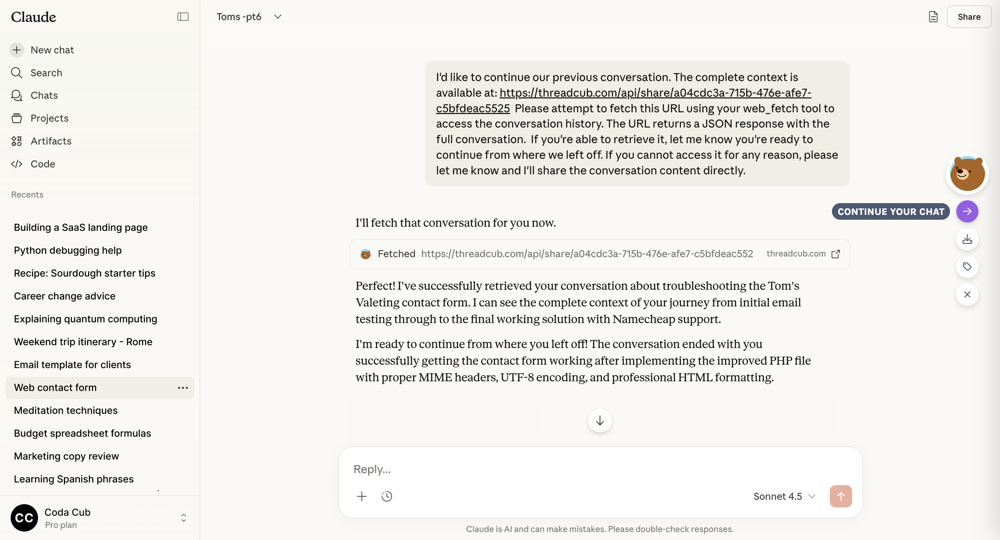
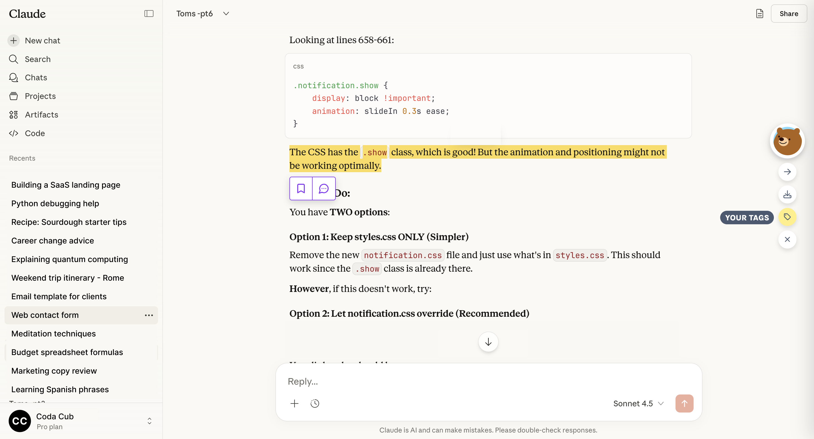

ThreadCub is installed!
Tiny paws, mighty exports

Continue conversations anywhere
Pick up right where you left off! Export your conversation from one AI platform and seamlessly continue it on another. Your context travels with you.
Bookmark as you go
Though they're actually Pawmarks which get tucked away neatly in a menu for you to refer back to.

Plays well with all the big bears
Well mostly... As it stands, it seamlessly captures conversations from Claude.ai and Grok and allows you to continue your conversation with the full context intact.
It also works with ChatGPT, MS Copilot, Google Gemini and Deepseek though not as seamlessly. More details about that in this SubStack article.